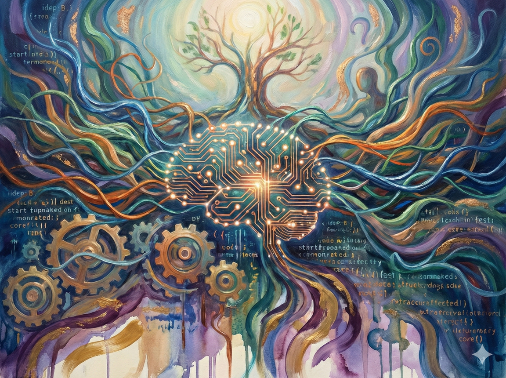
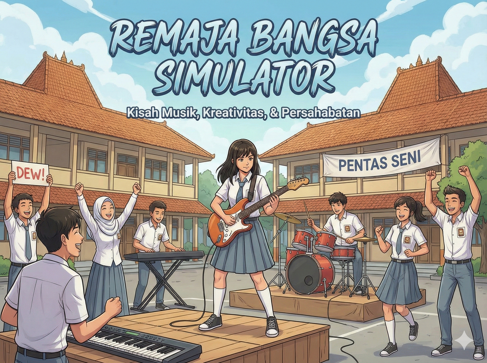

Karya Digital
Pendamping Digital Remaja

SahabatCurhat AI
Menyediakan dukungan emosional yang selalu tersedia, pribadi, terpersonalisasi, dan dengan filter keamanan tinggi. Sebuah jangkar penting dalam menavigasi kesejahteraan mental mereka.

Game Simulasi
Lingkungan yang aman dan bebas risiko bagi remaja untuk menguji coba pilihan hidup yang penting dan membangun kepercayaan diri dalam kemampuan mengambil keputusan.

Aplikasi GrowthTracker
Aplikasi yang dirancang untuk memberdayakan dan membekali remaja dengan keterampilan esensial: kesadaran diri (self-awareness), penguasaan interpersonal, dan manajemen hidup.